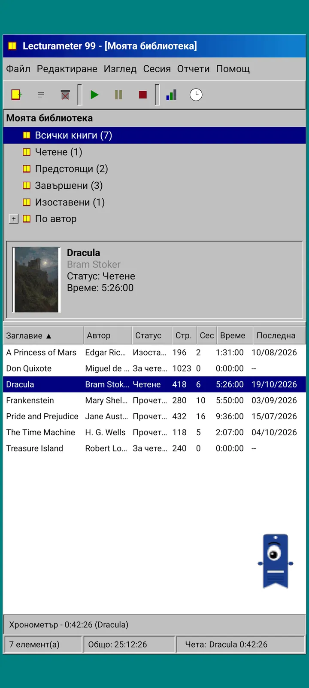
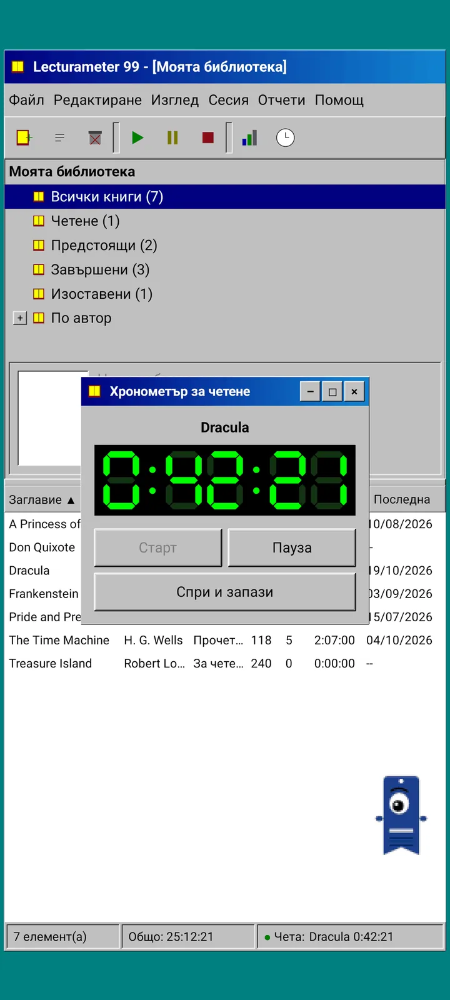
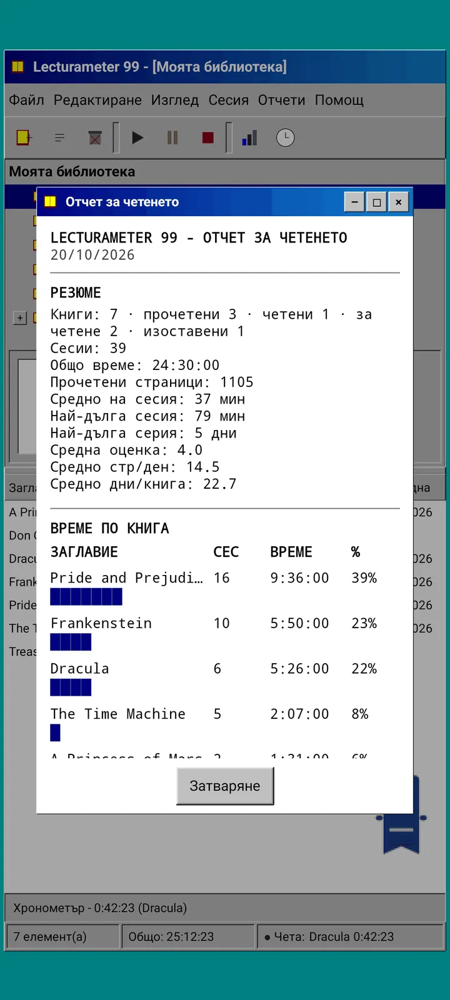
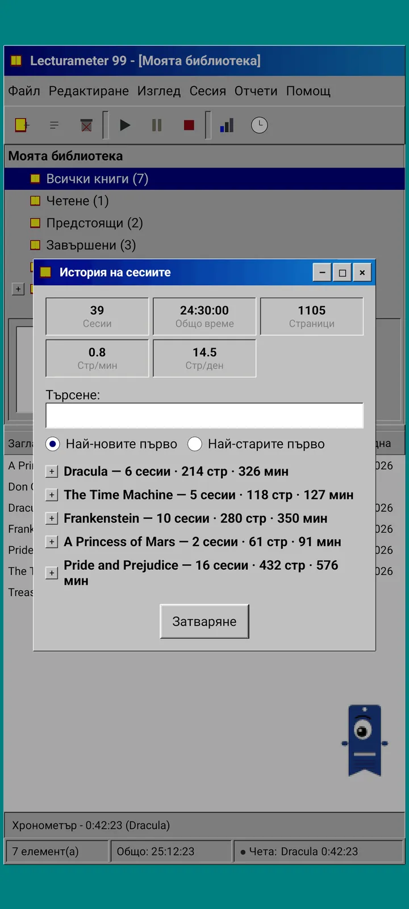
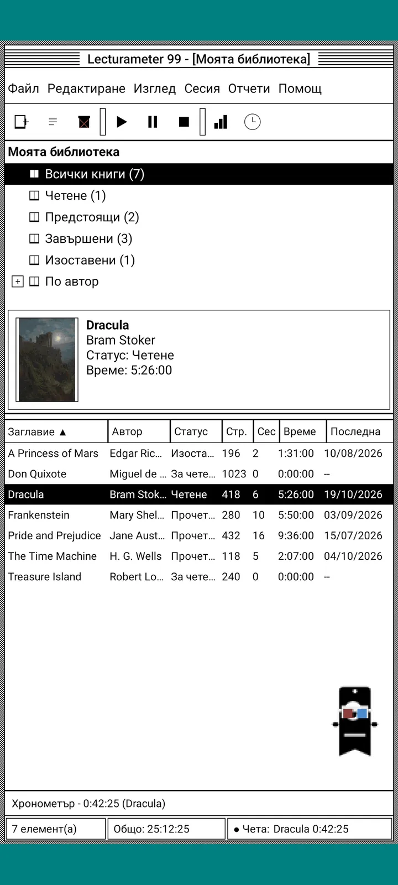
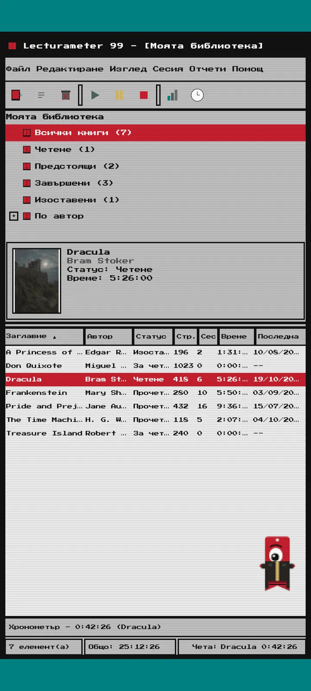
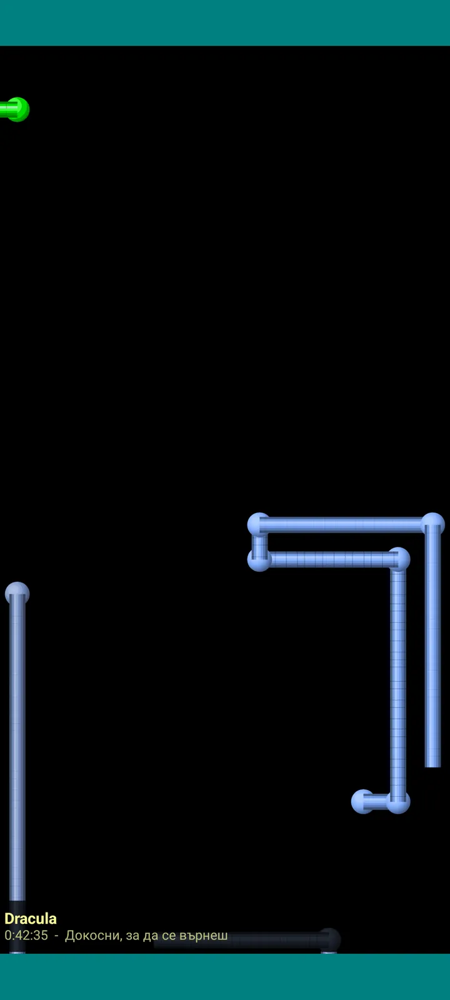

Lecturameter 1999
Lecturameter, сякаш си го инсталирал от CD-ROM през 1999 г. Алтернативен клиент за приложението, с прозорци, менюта и таблици, който отваря истинските ти резервни копия.

Какво е
Настолна програма от края на деветдесетте, която работи на телефона ти. Един прозорец върху синьозелен работен плот, лента с менюта, лента с инструменти, дърво с папки, гъста таблица и лента за състоянието.
- Дърво на библиотеката: всички книги, четене, предстоящи, завършени, изоставени и по автор
- Таблица със заглавие, автор, статус, страници, сесии, време и последно четене. Докосни заглавието на колона, за да сортираш
- Истинско търсене на книги в същия каталог, който използва Lecturameter
- Импортира и експортира резервното копие на Lecturameter и CSV от Goodreads. Данните ти влизат и излизат, без нищо да се губи

Защо съществува
Експеримент: да изградя идеята за Lecturameter от нулата при съвсем различни дизайнерски принципи, без да пипам истинското приложение. От всички преосмисляния версията от 1999 г. ми хареса най-много, затова я довърших като забавно упражнение и я превърнах в пълноценен клиент. Нарочно е по-проста от Lecturameter: това е експеримент и по принцип няма да се развива повече.
- Таймер в плаващ прозорец със зелен LCD дисплей. Мести се, минимизира се в лента на задачите и продължава да брои в лентата за състоянието
- Когато спреш, диалогът за запазване на сесията пита за страниците ти и изчислява темпото ти, точно като в Lecturameter
- Запазените сесии са сесии на Lecturameter: връщат се в модерното приложение, ако експортираш резервно копие от Lecturameter 1999 и го импортираш в Lecturameter.

Отчет за четенето
Статистиката е отпечатан отчет: резюме, време по книга с блокови ленти, скорост в страници на ден, календар на годината, нарисуван със символи, и последните седем дни.

История на сесиите
Сесии, групирани по книга в дърво с плюс и минус, с пет числа най-горе: сесии, общо време, страници, страници в минута и страници на ден.

Запазване на сесията
Дата, минути, първа и последна страница, коментар. Резюмето изчислява страниците и темпото, докато пишеш. Ако стигнеш последната страница, пита дали си завършил книгата.

Pagi 99
Pagi също пътува до 1999 г.: пикселизиран и свободен по екрана като офис асистентите от онова време. Можеш да го влачиш, казва реплика, когато го докоснеш, и показва съвети в жълти балончета.
Теми
Classic 98 е безплатна и по подразбиране. Пакетът добавя още шест, всяка със собствен фон и собствени звуци.

Избери я от менюто Изглед
Изглед, Тема... отваря прозорец със седемте теми. Промяната достига наведнъж до всеки прозорец, таймера и Pagi.
- Classic 98, безплатна и по подразбиране: сиви прозорци, тъмносини заглавни ленти и синьозелен работен плот
- Пакет с теми: 1984, Gumdrop, Memory, Towers, Core и 8-bit
- Всяка тема носи собствен фон на работния плот и собствени звуци за докосвания, прозорци и таймера
- Изглед, Звуци на темата изключва звуците, ако четеш в тишина

Classic 98
Сиви прозорци, тъмносини заглавни ленти и синьозелен работен плот. Безплатна е и с нея се отваря приложението.

1984
Еднобитов черно-бял работен плот с точкови шарки и квадратни прозорци.

Gumdrop
Прозрачна цветна пластмаса, заоблени бутони и райета на фона.

Memory
Менютата на конзола с дискове от деветдесетте, в тъмносини тонове.

Towers
Друга конзола с дискове от деветдесетте, нощно синьо със светлосини линии.

Core
Черно-зелена конзола, като екран, който никога не се изключва.

8-bit
Едри пиксели, малко цветове и квадратни букви.

Пробвай, преди да платиш
Докосни заключена тема и цялото приложение се сменя с нея. Ако затвориш, без да купиш, предишната тема се връща.
Скрийнсейвъри
Появяват се само докато таймерът работи и оставиш телефона на мира. Изчакват 1, 3 или 5 минути, или никога. Едно докосване те връща и таймерът продължава да брои.

Летящи книги
Пикселни книги, които размахват корици по черен екран.

Поле от букви
Букви от много азбуки, които прелитат като звездно поле.

Тръби от страници
Тръби от страници, които се рисуват сами, докато екранът се запълни.

Подскачащ Pagi
Pagi, който отскача от краищата на екрана.

Часовник за четене
Времето на сесията с големи LCD цифри.

Костюми за Pagi
Осем костюма за Pagi 99. Избираш ги от Изглед, Костюм на Pagi..., и можеш да ги пробваш, преди да платиш.
- Касетофон
- Шапка обърната назад
- 3D очила
- Неонови слънчеви очила
- Дискета в ръка
- Кожено яке
- Джобен любимец
- Картонена корона
Магазин
Приложението е безплатно и пълноценно за записване на четенето. Това, което можеш да купиш, променя само как изглежда.
Цялото приложение, без времеви лимит.
- Библиотека, търсене, таймер и сесии
- Отчет за четенето и история на сесиите
- Резервно копие на Lecturameter и CSV от Goodreads, за импортиране и експортиране
- Тема Classic 98 и Pagi 99
- Без акаунт и без реклами
Еднократни плащания, без абонаменти.
- Пакет с теми, €3.49: 6 теми с фон и звуци, плюс скрийнсейвърите
- Скрийнсейвъри, €1.99: 5-те скрийнсейвъра
- Костюми за Pagi, €1.99: 8-те костюма
- Целият 1999, €4.49: теми, скрийнсейвъри и костюми
Бакшиши по желание в менюто Помощ, ако искаш да ме черпиш едно кафе.
Темите и костюмите могат да се пробват на живо, преди да платиш. Ако затвориш, без да купиш, се връща това, което имаше.
Какво се променя спрямо Lecturameter
Същото като в Lecturameter
- Същите данни: книги, сесии, статуси, оценки и бележки. Файлът с резервното копие е един и същ в двете приложения.
- Търсене на книги по заглавие или автор.
- Истински таймер: продължава да брои във фонов режим и дори ако затвориш приложението.
- Без акаунт, без реклами, без връзка, освен за търсене на книги.
- Същите езици като Lecturameter.
Само в изданието 1999
- Настолен интерфейс от 1999 г. Без Material.
- Истински прозорци: влачиш ги, минимизираш ги и ги затваряш с кръстчето.
- Отчет за четенето в текст, с календар, нарисуван със символи.
- Контекстно меню при продължително натискане и клавишни комбинации, ако свържеш клавиатура.
- Пикселизиран Pagi 99 с балончета със съвети.
- Теми по желание със собствен фон и звуци, скрийнсейвъри, докато таймерът работи, и костюми за Pagi.
Какво нарочно липсва
- Без Pro и без абонамент. Записването на четенето е изцяло безплатно, магазинът продава само външен вид.
- Без предизвикателства, Bingo, годишен Wrapped и уиджети.
- Без потапяща сесия, фонови звуци и резервно копие в Google Drive. Резервното копие се запазва като файл.
Затворен тест
Lecturameter 1999 е в затворено тестване в Google Play. iOS ще дойде по-късно, още без дата.
- Присъедини се към групата groups.google.com/g/lecturameter-1999
- Запиши се като тестер на play.google.com/apps/testing/com.lecturameter.r1999
- Инсталирай го от Google Play
В затворено тестване в Google Play, iOS по-късно. Прочети публикацията в блога , за да видиш откъде идва и какво да очакваш.